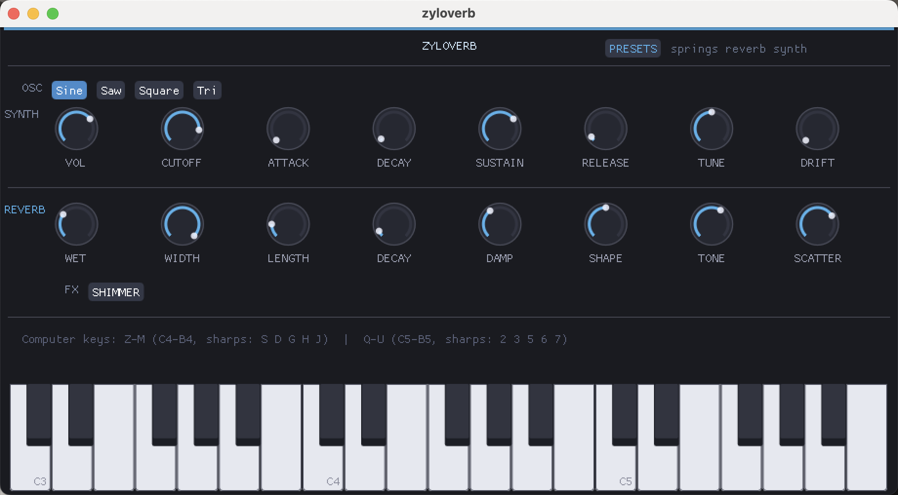

Play the sound before it becomes space.
Sine, saw, square, and triangle oscillators feed a direct synth section with volume, cutoff, envelope, tune, and drift.
About
Zyloverb is a springs reverb synth: a playable oscillator front end feeding a spacious reverb engine. Shape the note, color the room, add shimmer, and play huge spaces directly from the built-in keyboard.
Available as standalone app and VST3 · Windows · 64-bit only

Core Instrument
Sine, saw, square, and triangle oscillators feed a direct synth section with volume, cutoff, envelope, tune, and drift.
Wet, width, length, decay, damp, shape, tone, and scatter controls make the space feel physical and adjustable.
The dedicated Shimmer effect turns simple notes into glowing pads, high reflections, and wide harmonic tails.
Use the preset browser to jump between playable spaces without leaving the main control surface.
Springs Reverb Synth
Zyloverb gives the space its own keyboard. Dial in the oscillator, shape the envelope, then use width, length, damp, shape, tone, scatter, and shimmer to make the room sing with the note.
It is built for those moments when a reverb should become the hook, not just sit behind one. Play simple tones into the engine and the tail becomes a pad, a struck spring, a glassy swell, or a huge ambient wash you can perform in real time.
Oscillator
Envelope
Springs
Shimmer
Playable Space
Shape the source, stretch the room, then color the tail with width, length, damp, tone, and scatter.
Feature List
Playable springs reverb synth with oscillator source, ADSR shaping, and keyboard input
Reverb controls for wet, width, length, decay, damp, shape, tone, and scatter
Dedicated Shimmer FX for bright harmonic tails and ambient pads
Sine, saw, square, and triangle oscillator choices for different source tones
Preset browser for springs reverb synth patches and quick sound changes
Built-in keyboard plus computer-key mapping for fast sketching
Audio Samples
Springs Bloom
Playable source tone blooming into a wide spring tail.
Shimmer Lift
Bright upper harmonics with a slow ambient rise.
Scatter Keys
Short notes feeding a diffuse reverb cloud.
System Requirements